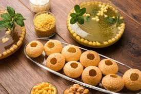

.jpeg)
.jpeg)
.jpeg)
.jpeg)
.jpeg)
Food is any substance consumed to provide nutritional support for organism . Food is usually of plant, animal and fungal origens and contain essential nutirtions.
Pizza

Pizza[a][1] is an Italian, specifically Neapolitan, dish typically consisting of a flat base of leavened wheat-based dough topped with tomato, cheese, and other ingredients, baked at a high temperature, traditionally in a wood-fired oven. The term pizza was first recorded in 997 AD, in a Latin manuscript from the southern Italian town of Gaeta, in Lazio, on the border with Campania.[2] Raffaele Esposito is often credited for creating the modern pizza in Naples.[3][4][5][6] In 2009, Neapolitan pizza[7] was registered with the European Union as a traditional speciality guaranteed (TSG) dish. In 2017, the art of making Neapolitan pizza was included on UNESCO's list of intangible cultural heritage.[8]
Dosa

The dosa originated in South India, but its precise geographical origins are unknown. According to food historian K. T. Achaya, references in the Sangam literature suggest that dosa was already in use in the ancient Tamil country around the first century CE.[1] However, according to historian P. Thankappan Nair, dosa originated in the town of Udupi in Karnataka.[2] Achaya states that the earliest written mention of dosa appears in the eighth-century literature of present-day Tamil Nadu, while the earliest mention of dosaë in Tulu literature appears a century later.
Jalebi

The south Asian variety is made by deep-frying maida flour (plain flour or all-purpose flour) batter in pretzel or circular shapes, which are then soaked in sugar syrup. Jalebi is eaten with curd or rabri (in North India) along with optional other flavors such as kewra (scented water). In some west Asian cuisines, jalebi may consist of a yeast dough fried and then dipped in a syrup of honey and rose water.[citation needed] The North African dish of Zalabia uses a different batter and a syrup of honey (Arabic: ʻasal) and rose water.
Panipuri
Panipuri or golgappa is a deep-fried breaded hollow spherical shell - about 1 inch (25 mm) in diameter - filled with a combination of potatoes, raw onions, chickpeas, and spices. It is a common snack and street food in the Indian subcontinent.[2] It is often flavoured with chili powder, chaat masala, herbs, and many other spices.[3][4][5]
Chole bhature

hole bhature Hindi pronunciation: [t͡ʃʰoː.leː bʱə.ʈuː.ɾeː] is a food dish popular in the northern areas of the Indian subcontinent.[1] It is a combination of chana masala (spicy white chickpeas) and bhatura/puri, a deep-fried bread made from maida.[2][3][4] Chole bhature is often eaten as a breakfast dish, sometimes accompanied with lassi. It can also be street food or a complete meal and may be accompanied with onions, pickled carrots, green chutney or achaar.[5]
Burger
.jpeg)
A hamburger, or simply a burger, is a dish consisting of fillings—usually a patty of ground meat, typically beef—placed inside a sliced bun or bread roll. The patties are often served with cheese, lettuce, tomato, onion, pickles, bacon, or chilis with condiments such as ketchup, mustard, mayonnaise, relish or a "special sauce", often a variation of Thousand Island dressing, and are frequently placed on sesame seed buns. A hamburger patty topped with cheese is called a cheeseburger.[1] Under some definitions, and in some cultures, a burger is considered a sandwich. Hamburgers are typically associated with fast-food restaurants and diners but are also sold at other restaurants, including high-end establishments. There are many international and regional variations of hamburgers. Some of the largest multinational fast-food chains feature burgers as one of their core products: McDonald's Big Mac and Burger King's Whopper have become global icons of American culture.[2][3]